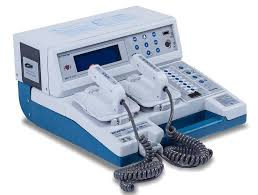

Desfibrilador DX-400
Equipamento essencial para reverter arritmias cardíacas através de choques elétricos controlados.
- Modos manual e automático
- Tela digital com indicadores claros
- Bateria recarregável de longa duração
Equipamentos médicos de alta precisão para clínicas e hospitais
Na MedTech Solutions fornecemos equipamentos com garamtia e suporte técnico especializado
Solicite um orçamentoEquipamento essencial para reverter arritmias cardíacas através de choques elétricos controlados.

Monitor multiparamétrico com display de alta resolução e alarmes programáveis.
Aparelho destinado a auxiliar ou substituir a respiração do paciente em ambiente hospitalar.
Dispositivo utilizado para administrar medicamentos e soluções com precisão e segurança.
Equipamento utilizado para esterilização de materiais e instrumentos cirúrgicos.
| Produto | Peso | Garantia | Preço estimado |
|---|
Fundada em 1989, a MedTech fornece equipamentos de alta qualidade para o mundo todo, com uma ampla cartela de equipamentos.
"Compromisso com sua vida" -MedTech